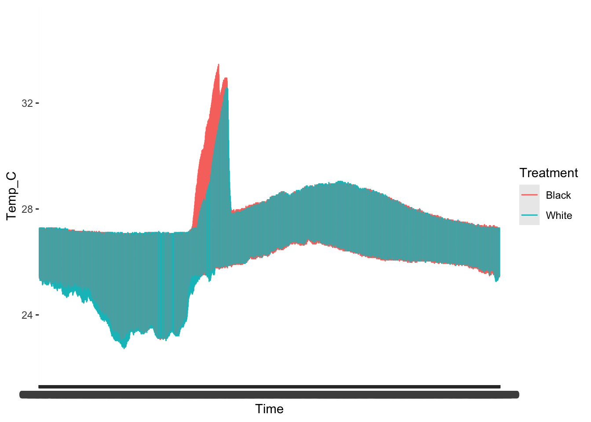
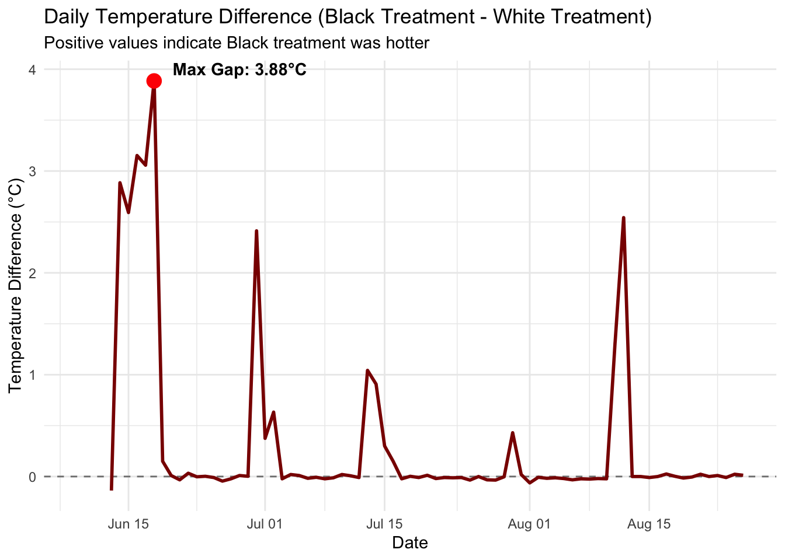

Warning: Removed 24 rows containing missing values or values outside the scale range
(`geom_line()`).

T tests and comparisons
t_result <-t.test(Temp_C ~ Treatment, data = HOBO_clean)t_result
Welch Two Sample t-test
data: Temp_C by Treatment
t = 42.74, df = 1384483, p-value < 2.2e-16
alternative hypothesis: true difference in means between group Black and group White is not equal to 0
95 percent confidence interval:
0.07849415 0.08603938
sample estimates:
mean in group Black mean in group White
26.45304 26.37077
Welch Two Sample t-test
data: mean_daily_max by Treatment
t = 7.0712, df = 4.005, p-value = 0.002101
alternative hypothesis: true difference in means between group Black and group White is not equal to 0
95 percent confidence interval:
0.2662753 0.6102808
sample estimates:
mean in group Black mean in group White
28.54200 28.10372
treatment_daily_summary <- daily_max_df %>%group_by(Date, Treatment) %>%summarise(avg_max_temp =mean(max_temp, na.rm =TRUE), .groups ="drop") %>%# Pivot treatments into columns to compute the differencepivot_wider(names_from = Treatment, values_from = avg_max_temp) %>%mutate(# Absolute difference between black and white treatment averagestemp_diff =abs(Black - White),# Signed difference (positive means Black was hotter, negative means White was hotter)black_minus_white = Black - White )
# Step B: Find the day with the LARGEST temperature gaplargest_gap <- treatment_daily_summary %>%filter(!is.na(temp_diff)) %>%slice_max(order_by = temp_diff, n =1)# View the resultprint("Day with the largest temperature difference between treatments:")
[1] "Day with the largest temperature difference between treatments:"
print(largest_gap)
# A tibble: 1 × 5
Date White Black temp_diff black_minus_white
<date> <dbl> <dbl> <dbl> <dbl>
1 2026-06-18 33.8 37.7 3.88 3.88
ggplot(treatment_daily_summary, aes(x = Date, y = black_minus_white)) +geom_hline(yintercept =0, linetype ="dashed", color ="grey50") +geom_line(color ="darkred", size =1) +geom_point(data = largest_gap, aes(x = Date, y = black_minus_white), color ="red", size =4) +annotate("text", x = largest_gap$Date, y = largest_gap$black_minus_white, label =paste0(" Max Gap: ", round(largest_gap$temp_diff, 2), "°C"),hjust =-0.1, vjust =-0.5, fontface ="bold" ) +labs(title ="Daily Temperature Difference (Black Treatment - White Treatment)",subtitle ="Positive values indicate Black treatment was hotter",x ="Date",y ="Temperature Difference (°C)" ) +theme_minimal()
Warning: Using `size` aesthetic for lines was deprecated in ggplot2 3.4.0.
ℹ Please use `linewidth` instead.
Warning: Removed 4 rows containing missing values or values outside the scale range
(`geom_line()`).

ggsave("Temp_Diff_Graph.png")
Saving 7 x 5 in image
Warning: Removed 4 rows containing missing values or values outside the scale range
(`geom_line()`).
Tide Correcting
add in blocks for each hobo and then add what the tide height is for each block and then do multiple if else statements to account for each block
Then group by treatment to get the average exposed/submerged
if block height >tide height then exposed=True if block height <tide height then exposed= false
for mica- then group by treatment and average for exposed=false
if tide_height > 0.26 for Block 2 then submerged=TRUE if tide_height > 0.05 for Block 4 then submerged=TRUE if tide_height > 0.003 for Block 6 then submerged=TRUE if tide_height > 0.065 for Block 8 then submerged=TRUE
Warning: There was 1 warning in `mutate()`.
ℹ In argument: `Date_Time_HST = mdy_hms(Date_Time_HST)`.
Caused by warning:
! All formats failed to parse. No formats found.
Tide Notes for Winter sites- not concerned about tides not heating tiles enough
By end of December, tides (Diamond Head) are in mid afternoon (1-3) Before that, there’s a higher low in the am about 8 hrs before the low low, usually around the time the summer tides have been in the am, but only at about 0.2-0 as lowest values. Same ish with Sandy’s and Ewa with afternoon lows right at 0 by mid-end of Dec.
Probably want to do tidal heights at the 0.1 end of the tile block spectrum that we have at TB